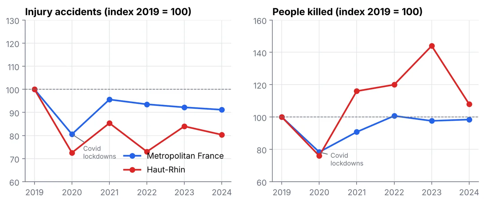
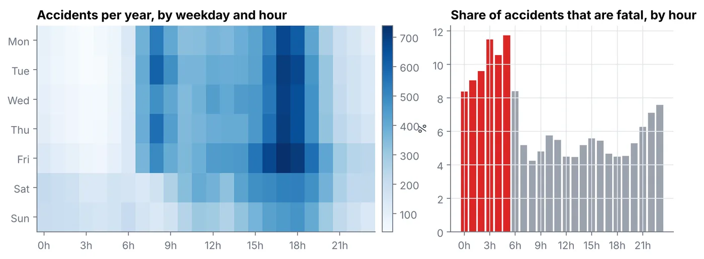
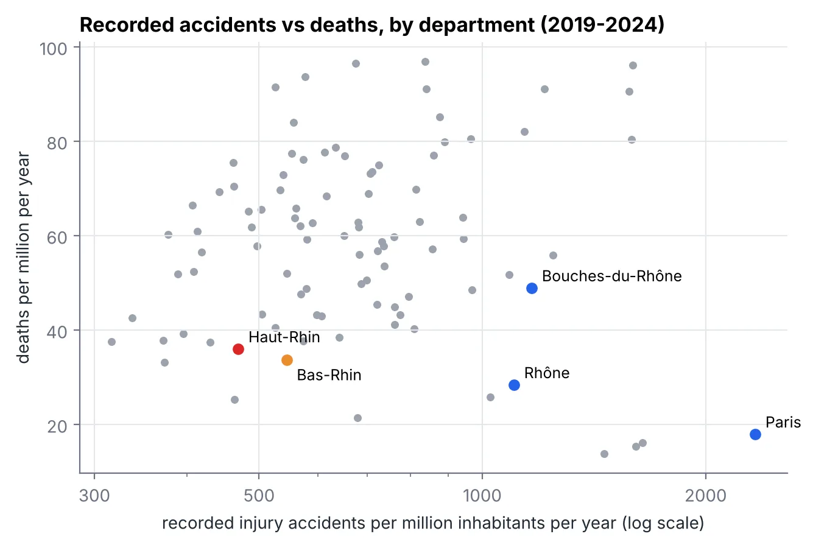
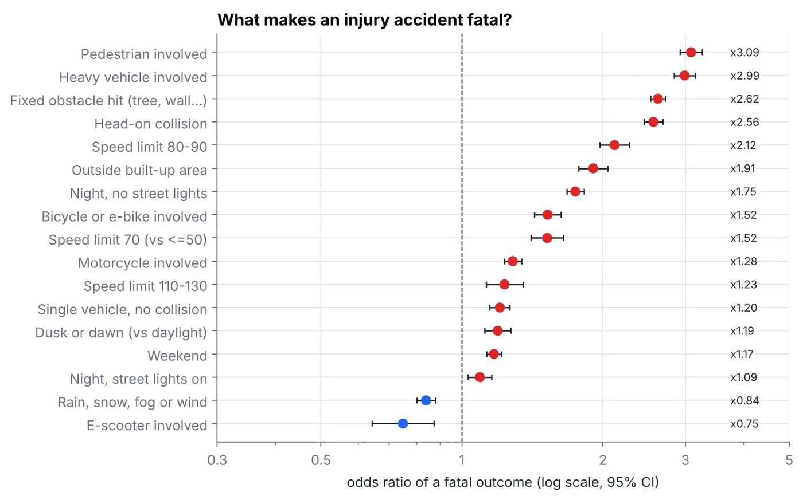

Analyse de données · octobre 2026 · SQL (DuckDB), Python, statsmodels
Accidents de la route en France et dans le Haut-Rhin, 2019-2024
Quand, où et à qui arrivent les morts sur la route, et qu'est-ce qui rend un accident corporel mortel ?
- 309 756accidents corporels en métropole
- 18 356tués de 2019 à 2024
- 68 %des tués hors agglomération, pour 36 % des accidents
- AUC 0,76pour le modèle de gravité
La question
Quand, où et à qui arrivent les morts sur la route ? Comment le Haut-Rhin se situe-t-il par rapport au reste de la France ? Et quelles circonstances transforment un accident corporel en accident mortel ?
Les données
Le fichier national des accidents corporels (BAAC), publié par l'Observatoire national interministériel de la sécurité routière (ONISR) sur data.gouv.fr : un enregistrement par accident avec au moins un blessé constaté par la police ou la gendarmerie, en quatre tables par an (accidents, lieux, véhicules, usagers). L'étude couvre 2019 à 2024 en France métropolitaine (96 départements), avec les populations de l'Insee au 1er janvier 2023.
La méthode
Nettoyage en SQL (DuckDB). Les 24 fichiers CSV changent de format d'une année à l'autre : identifiant renommé en 2022, valeurs manquantes codées « -1 », « (1) » ou « N/A », virgules décimales, départements écrits « 1 » au lieu de « 01 ». Une seule macro SQL convertit chaque champ codé en entier ou en valeur manquante. Les quelque 40 catégories de véhicules sont regroupées en 11 modes de déplacement, plus les piétons.
Validation. Mes nombres de tués correspondent exactement aux chiffres officiels de l'ONISR pour 2019 à 2023 (3 244 ; 2 541 ; 2 944 ; 3 267 ; 3 167) : le nettoyage ne perd aucun accident.
Modèle. Une régression logistique (statsmodels) sur 301 290 accidents, avec un effet par année, testée sur 25 % des données mises de côté.
Les résultats
Un plateau depuis 2019
Environ 3 000 morts par an, sans amélioration depuis 2019. Après les confinements de 2020, les accidents enregistrés se sont stabilisés environ 9 % sous leur niveau de 2019, tandis que les décès y sont revenus (3 193 en 2024).

Quand : la nuit tue davantage
Le créneau le plus chargé est le vendredi entre 17 h et 18 h. Mais entre 3 h et 6 h du matin, 11 % des accidents sont mortels, deux fois plus qu'en journée. La nuit représente 26 % des accidents et 35 % des tués.

Qui et où
- 78 % des tués sont des hommes ; le taux de mortalité culmine entre 20 et 24 ans, puis remonte après 80 ans.
- Les morts en trottinette électrique sont passés de 11 à 47 par an, les blessés de 677 à 2 746.
- Hors agglomération : 36 % des accidents, mais 68 % des tués.
Le Haut-Rhin, et un piège dans les données
Avec 36 tués par million d'habitants et par an contre 46 au niveau national, le Haut-Rhin est le 11e département le plus sûr sur 96.
Les accidents du Haut-Rhin, année par année
Filtrez par année, ou n'affichez que les accidents mortels. Chaque point est un accident corporel à sa position GPS.
Mais Mulhouse enregistre moins d'accidents que Colmar, ville plus petite (17 par an contre 28), et quinze fois moins que Strasbourg (266), alors qu'elle compte autant de tués que Colmar (13 de 2019 à 2024). Les accidents légers y sont très probablement sous-enregistrés dans le fichier national. Conséquence : pour ce secteur, seuls les indicateurs fondés sur les décès sont fiables.
Le même décalage se voit à l'échelle du département : le Haut-Rhin enregistre 469 accidents par million d'habitants et par an, contre 785 au niveau national.

Ce qui rend un accident mortel
À autres facteurs égaux, la présence d'un piéton ou d'un poids lourd multiplie environ par 3 la probabilité (en cote) qu'un accident soit mortel ; un obstacle fixe ou un choc frontal par 2,6 ; une route à 80-90 km/h par 2,1 par rapport à 50 km/h ; la nuit sans éclairage par 1,75. Deux résultats semblent contre-intuitifs et rappellent qu'il s'agit d'associations, pas de causes : le mauvais temps (0,84 : on ralentit, et la pluie ajoute beaucoup d'accidents légers) et la trottinette (0,75 : surtout des chutes urbaines à basse vitesse). Le modèle classe correctement les accidents (AUC 0,76 sur des données non vues) mais n'explique qu'une partie du résultat : la vitesse au choc, l'alcool et le port de la ceinture ne sont pas dans les données ouvertes.

Les limites
- Données de police uniquement : les accidents sans intervention manquent, et pas de la même façon partout (voir Mulhouse).
- Pas de données d'exposition (kilomètres parcourus par mode) : la hausse des morts en trottinette reflète peut-être en partie la hausse des trajets.
- Petits nombres dans le Haut-Rhin : les chiffres annuels fluctuent au hasard.
Tout se relance avec python run_all.py (environ 2 minutes).